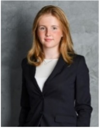

Carolina
Krotsch.

- Nanophotonics
- Semiconductors
- Deep Tech Entrepreneurship
I’m a physics master’s student at the Technical University of Munich, interested in nanophotonics, laser physics and semiconductors. I was the first bachelor’s student accepted into Nobel laureate Ferenc Krausz’s attosecond group at the Max Planck Institute of Quantum Optics, where I built an interferometer resolving sub-quarter-wavelength displacements.
As much as I love physics, I love the deep-tech companies that grow out of it. I ran high-voltage reliability measurements on gallium nitride power transistors at Infineon, and now I’m helping build the world’s first all-optical THz CPU at Akhetonics.
Beyond the technical side, I’ve learned to lead teams and grow a business at scale. I led the Spain expansion of the edtech startup ubiMaster and built a hackathon platform end to end for START Munich.